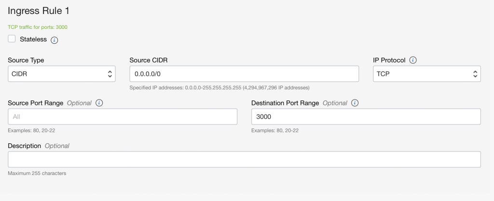

<div class="initial-content">
  <div id="main" role="main">

  <article class="page has-sidebar" itemscope itemtype="https://schema.org/CreativeWork">
    <meta itemprop="headline" content="Building an API in Rust and hosting on Oracle Cloud Infrastructure">
    
    <meta itemprop="datePublished" content="2022-12-12T08:00:00+00:00">
    


    <header>
      <h1 id="page-title" class="page__title" itemprop="headline">Building an API in Rust and hosting on Oracle Cloud Infrastructure
</h1>
      


    </header>

    <section class="page__content" itemprop="text">
      

        <p>It’s impossible to work in cloud services without hearing about Rust, the system’s programming language from Mozilla. It’s used all over the internet by companies like <a href="https://blog.cloudflare.com/workers-rust-sdk/">Cloudflare</a>, <a href="https://engineering.fb.com/2021/04/29/developer-tools/rust/">Facebook</a>, and <a href="https://discord.com/blog/why-discord-is-switching-from-go-to-rust">Discord</a>. It’s a strongly-typed yet flexible language that emphasizes strict guidelines around memory usage, making it blazing fast and resource lean. The language also focuses on developer productivity, which is evident in their tooling and <a href="https://crates.io/">package ecosystems</a>.</p>

<p>Rust is being used in places where C worked best, due in part to its recognizable syntax. It is also replacing some higher-level languages, like Node and Ruby. In this blog post, we will build a small API microservice using Rust. APIs are generally used in situations where services—a server and a client—must communicate with each other. Our API will represent the backend for an inventory bookstore, where books can be added, fetched, and removed.</p>

<p>This app will be hosted on Oracle Cloud Infrastructure (OCI). OCI enables cloud-native containers to run in highly secure and performant environments that are also fully managed. This makes it a perfect match to host Rust applications, since the platform and the language are well-suited to solve similar problems.</p>

<h2 id="prerequisites">Prerequisites</h2>

<p>Before getting started, you’ll need to install several software packages.</p>

<p>First, you’ll need Rust. Regardless of your operating system, <a href="https://rustup.rs">the Rustup script</a> is guaranteed to work and installs all the necessary tools you need to start building a Rust application. You’ll also need to install <a href="https://www.docker.com">Docker</a> to test the app containerization locally.</p>

<p>In order to deploy the app online, you’ll also need <a href="https://www.oracle.com/cloud/free/?source=CloudFree_CTA1_Default&amp;intcmp=CloudFree_CTA1_Default">a free OCI account</a>.</p>

<h2 id="getting-started-with-the-rust-code">Getting started with the Rust code</h2>

<p>As with many programming languages, Rust comes with its own package management system called <a href="https://crates.io">Crates</a>. To start building our app, we will want an HTTP web framework to do the heavy lifting for us. There are many to choose from, but we’ll use <a href="https://github.com/seanmonstar/warp">warp</a>, as it’s both popular and performant. Just as Node uses package.json to manage packages, Rust uses Cargo.toml.</p>

<p>Create a new directory within which you can start building this project, and create a file named Cargo.toml in it. Paste these lines into that file:</p>

<div class="language-plaintext highlighter-rouge"><div class="highlight"><pre class="highlight"><code>[package]
name = "server"
version = "0.1.0"
license = "MIT"
edition = "2018"

[dependencies]
tokio = { version = "1", features = ["full"] }
warp = "0.3"
serde = { version = "1", features = ["derive"]}
serde_json = "1.0"
</code></pre></div></div>

<p>Here, we’re defining the general metadata of our package. We’re specifying that we want to create a binary executable named server; we also have a list of dependencies that our project needs, including warp.</p>

<p>Next, create a directory called src, and a directory called bin within that. Then, create a file called server.rs, and paste these lines into it:</p>

<div class="language-rust highlighter-rouge"><div class="highlight"><pre class="highlight"><code><span class="nd">#![deny(warnings)]</span>
<span class="k">use</span> <span class="nn">warp</span><span class="p">::</span><span class="n">Filter</span><span class="p">;</span>

<span class="nd">#[tokio::main]</span>
<span class="k">async</span> <span class="k">fn</span> <span class="nf">main</span><span class="p">()</span> <span class="p">{</span>
    <span class="c1">// Match any request and return hello world!</span>
    <span class="k">let</span> <span class="n">routes</span> <span class="o">=</span> <span class="nn">warp</span><span class="p">::</span><span class="nf">any</span><span class="p">()</span><span class="nf">.map</span><span class="p">(||</span> <span class="s">"Hello, World!"</span><span class="p">);</span>

    <span class="nn">warp</span><span class="p">::</span><span class="nf">serve</span><span class="p">(</span><span class="n">routes</span><span class="p">)</span><span class="nf">.run</span><span class="p">(([</span><span class="mi">127</span><span class="p">,</span> <span class="mi">0</span><span class="p">,</span> <span class="mi">0</span><span class="p">,</span> <span class="mi">1</span><span class="p">],</span> <span class="mi">3000</span><span class="p">))</span><span class="k">.await</span><span class="p">;</span>
<span class="p">}</span>
</code></pre></div></div>

<p>We’ve defined a very basic Warp server, which will run on <a href="http://127.0.0.1:3000">http://127.0.0.1:3000</a>. When a user visits that page, they’ll see a greeting. Go ahead and type <code class="language-plaintext highlighter-rouge">cargo run</code> on the terminal. Cargo will download all the dependencies you defined, then it’ll compile them together with the server.rs file to create an executable. (All of that in just one command!) When it’s finished, you’ll see the following message:</p>

<div class="language-console highlighter-rouge"><div class="highlight"><pre class="highlight"><code><span class="gp">$</span><span class="w"> </span>cargo run
<span class="go">Finished dev [unoptimized + debuginfo] target(s) **in** 0.06s
Running `target/debug/server`
</span></code></pre></div></div>

<p>Navigate your browser window to <a href="http://127.0.0.1:3000">http://127.0.0.1:3000</a>, which should show the greeting, thus confirming that the initial project setup has worked!</p>

<h2 id="setting-up-an-api">Setting up an API</h2>

<p>Now that we have verified that our server runs correctly, it’s time to build a more proper API. We want our API to get a list of books, add a new book, and remove a book.</p>

<p>In a future blog, we will integrate with a backend database for storing and querying the data. To keep things simple in this tutorial, we’ll just fake the data store by defining an array to store all of our books.</p>

<p>Let’s start by defining the structure of a Book. Rust has the concept of structs, which are akin to lightweight classes. Here’s an example of what our Book class would look like:</p>

<p>(All the code below replaces the code in the server.rs file.)</p>

<div class="language-rust highlighter-rouge"><div class="highlight"><pre class="highlight"><code><span class="k">use</span> <span class="nn">serde</span><span class="p">::{</span><span class="n">Deserialize</span><span class="p">,</span> <span class="n">Serialize</span><span class="p">};</span>                                  
                                                                     
<span class="nd">#[derive(Clone,</span> <span class="nd">Serialize,</span> <span class="nd">Deserialize)]</span>                            
<span class="k">pub</span> <span class="k">struct</span> <span class="n">Book</span> <span class="p">{</span>                                                  
  <span class="n">title</span><span class="p">:</span> <span class="nb">String</span><span class="p">,</span>                                                       
  <span class="n">author</span><span class="p">:</span> <span class="nb">String</span><span class="p">,</span>
  <span class="n">year</span><span class="p">:</span> <span class="nb">u32</span><span class="p">,</span>
<span class="p">}</span>
</code></pre></div></div>

<p>We can then modify our main function to immediately set up a basic catalog of books that follow this structure. We will use a vector (which is like an expandable array), and store the list in memory:</p>

<div class="language-rust highlighter-rouge"><div class="highlight"><pre class="highlight"><code><span class="k">use</span> <span class="nn">std</span><span class="p">::</span><span class="nn">sync</span><span class="p">::</span><span class="nb">Arc</span><span class="p">;</span>
<span class="k">use</span> <span class="nn">tokio</span><span class="p">::</span><span class="nn">sync</span><span class="p">::</span><span class="n">Mutex</span><span class="p">;</span>

<span class="k">pub</span> <span class="k">type</span> <span class="n">Db</span> <span class="o">=</span> <span class="nb">Arc</span><span class="o">&lt;</span><span class="n">Mutex</span><span class="o">&lt;</span><span class="nb">Vec</span><span class="o">&lt;</span><span class="n">Book</span><span class="o">&gt;&gt;&gt;</span><span class="p">;</span>

<span class="nd">#[tokio::main]</span>
<span class="k">async</span> <span class="k">fn</span> <span class="nf">main</span><span class="p">()</span> <span class="p">{</span>
  <span class="k">let</span> <span class="k">mut</span> <span class="n">book_catalog</span><span class="p">:</span> <span class="nb">Vec</span><span class="o">&lt;</span><span class="n">Book</span><span class="o">&gt;</span> <span class="o">=</span> <span class="nn">Vec</span><span class="p">::</span><span class="nf">new</span><span class="p">();</span>
  <span class="n">book_catalog</span><span class="nf">.push</span><span class="p">(</span><span class="n">Book</span> <span class="p">{</span>
    <span class="n">title</span><span class="p">:</span> <span class="s">"The Hitchhiker's Guide to the Galaxy"</span><span class="nf">.to_string</span><span class="p">(),</span>
    <span class="n">author</span><span class="p">:</span> <span class="s">"Douglas Adams"</span><span class="nf">.to_string</span><span class="p">(),</span>
    <span class="n">year</span><span class="p">:</span> <span class="mi">1979</span><span class="p">,</span>
  <span class="p">});</span>
  <span class="n">book_catalog</span><span class="nf">.push</span><span class="p">(</span><span class="n">Book</span> <span class="p">{</span>
    <span class="n">title</span><span class="p">:</span> <span class="s">"The Restaurant at the End of the Universe"</span><span class="nf">.to_string</span><span class="p">(),</span>
    <span class="n">author</span><span class="p">:</span> <span class="s">"Douglas Adams"</span><span class="nf">.to_string</span><span class="p">(),</span>
    <span class="n">year</span><span class="p">:</span> <span class="mi">1980</span><span class="p">,</span>
  <span class="p">});</span>
  <span class="n">book_catalog</span><span class="nf">.push</span><span class="p">(</span><span class="n">Book</span> <span class="p">{</span>
    <span class="n">title</span><span class="p">:</span> <span class="s">"Life, the Universe and Everything"</span><span class="nf">.to_string</span><span class="p">(),</span>
    <span class="n">author</span><span class="p">:</span> <span class="s">"Douglas Adams"</span><span class="nf">.to_string</span><span class="p">(),</span>
    <span class="n">year</span><span class="p">:</span> <span class="mi">1982</span><span class="p">,</span>
  <span class="p">});</span>
  <span class="n">book_catalog</span><span class="nf">.push</span><span class="p">(</span><span class="n">Book</span> <span class="p">{</span>
    <span class="n">title</span><span class="p">:</span> <span class="s">"So Long, and Thanks for All the Fish"</span><span class="nf">.to_string</span><span class="p">(),</span>
    <span class="n">author</span><span class="p">:</span> <span class="s">"Douglas Adams"</span><span class="nf">.to_string</span><span class="p">(),</span>
    <span class="n">year</span><span class="p">:</span> <span class="mi">1984</span><span class="p">,</span>
  <span class="p">});</span>
  <span class="n">book_catalog</span><span class="nf">.push</span><span class="p">(</span><span class="n">Book</span> <span class="p">{</span>
    <span class="n">title</span><span class="p">:</span> <span class="s">"Mostly Harmless"</span><span class="nf">.to_string</span><span class="p">(),</span>
    <span class="n">author</span><span class="p">:</span> <span class="s">"Douglas Adams"</span><span class="nf">.to_string</span><span class="p">(),</span>
    <span class="n">year</span><span class="p">:</span> <span class="mi">1992</span><span class="p">,</span>
  <span class="p">});</span>

  <span class="k">let</span> <span class="n">db</span> <span class="o">=</span> <span class="nn">Arc</span><span class="p">::</span><span class="nf">new</span><span class="p">(</span><span class="nn">Mutex</span><span class="p">::</span><span class="nf">new</span><span class="p">(</span><span class="n">book_catalog</span><span class="p">));</span>
</code></pre></div></div>

<p>So far, so good? Right on!</p>

<p>The next task is to add routes to this API. There are a number of patterns to implement this, but the one suggested by Warp takes a two-pronged approach: First, the routes are defined, and then, the implementation of those routes is defined. This way, the implementation can change, but the route information can be considered static and stable.</p>

<p>Let’s go ahead and define these routes. We’ll drop the code first, and then provide a closer examination:</p>

<div class="language-rust highlighter-rouge"><div class="highlight"><pre class="highlight"><code><span class="k">mod</span> <span class="n">filters</span> <span class="p">{</span>
  <span class="k">use</span> <span class="k">super</span><span class="p">::</span><span class="n">Db</span><span class="p">;</span>
  <span class="k">use</span> <span class="k">super</span><span class="p">::</span><span class="n">Book</span><span class="p">;</span>
  <span class="k">use</span> <span class="k">super</span><span class="p">::</span><span class="n">handlers</span><span class="p">;</span>
  <span class="k">use</span> <span class="nn">warp</span><span class="p">::</span><span class="n">Filter</span><span class="p">;</span>
  <span class="k">use</span> <span class="nn">std</span><span class="p">::</span><span class="nn">convert</span><span class="p">::</span><span class="n">Infallible</span><span class="p">;</span>

  <span class="cd">/// The routes, combined.</span>
  <span class="k">pub</span> <span class="k">fn</span> <span class="nf">construct_book_routes</span><span class="p">(</span>
    <span class="n">db</span><span class="p">:</span> <span class="n">Db</span><span class="p">,</span>
  <span class="p">)</span> <span class="k">-&gt;</span> <span class="k">impl</span> <span class="n">Filter</span><span class="o">&lt;</span><span class="n">Extract</span> <span class="o">=</span> <span class="k">impl</span> <span class="nn">warp</span><span class="p">::</span><span class="n">Reply</span><span class="p">,</span> <span class="n">Error</span> <span class="o">=</span> <span class="nn">warp</span><span class="p">::</span><span class="n">Rejection</span><span class="o">&gt;</span> <span class="o">+</span> <span class="nb">Clone</span> <span class="p">{</span>
    <span class="nf">route_get_books</span><span class="p">(</span><span class="n">db</span><span class="nf">.clone</span><span class="p">())</span>
      <span class="nf">.or</span><span class="p">(</span><span class="nf">route_post_books</span><span class="p">(</span><span class="n">db</span><span class="nf">.clone</span><span class="p">()))</span>
      <span class="nf">.or</span><span class="p">(</span><span class="nf">route_delete_book</span><span class="p">(</span><span class="n">db</span><span class="nf">.clone</span><span class="p">()))</span>
  <span class="p">}</span>

  <span class="cd">/// GET /books</span>
  <span class="k">pub</span> <span class="k">fn</span> <span class="nf">route_get_books</span><span class="p">(</span>
    <span class="n">db</span><span class="p">:</span> <span class="n">Db</span><span class="p">,</span>
  <span class="p">)</span> <span class="k">-&gt;</span> <span class="k">impl</span> <span class="n">Filter</span><span class="o">&lt;</span><span class="n">Extract</span> <span class="o">=</span> <span class="k">impl</span> <span class="nn">warp</span><span class="p">::</span><span class="n">Reply</span><span class="p">,</span> <span class="n">Error</span> <span class="o">=</span> <span class="nn">warp</span><span class="p">::</span><span class="n">Rejection</span><span class="o">&gt;</span> <span class="o">+</span> <span class="nb">Clone</span> <span class="p">{</span>
    <span class="nn">warp</span><span class="p">::</span><span class="nd">path!</span><span class="p">(</span><span class="s">"books"</span><span class="p">)</span>
      <span class="nf">.and</span><span class="p">(</span><span class="nn">warp</span><span class="p">::</span><span class="nf">get</span><span class="p">())</span>
      <span class="nf">.and</span><span class="p">(</span><span class="nf">with_db</span><span class="p">(</span><span class="n">db</span><span class="p">))</span>
      <span class="nf">.and_then</span><span class="p">(</span><span class="nn">handlers</span><span class="p">::</span><span class="n">get_books</span><span class="p">)</span>
  <span class="p">}</span>

  <span class="cd">/// POST /books with JSON body</span>
  <span class="k">pub</span> <span class="k">fn</span> <span class="nf">route_post_books</span><span class="p">(</span>
    <span class="n">db</span><span class="p">:</span> <span class="n">Db</span><span class="p">,</span>
  <span class="p">)</span> <span class="k">-&gt;</span> <span class="k">impl</span> <span class="n">Filter</span><span class="o">&lt;</span><span class="n">Extract</span> <span class="o">=</span> <span class="k">impl</span> <span class="nn">warp</span><span class="p">::</span><span class="n">Reply</span><span class="p">,</span> <span class="n">Error</span> <span class="o">=</span> <span class="nn">warp</span><span class="p">::</span><span class="n">Rejection</span><span class="o">&gt;</span> <span class="o">+</span> <span class="nb">Clone</span> <span class="p">{</span>
    <span class="nn">warp</span><span class="p">::</span><span class="nd">path!</span><span class="p">(</span><span class="s">"books"</span><span class="p">)</span>
      <span class="nf">.and</span><span class="p">(</span><span class="nn">warp</span><span class="p">::</span><span class="nf">post</span><span class="p">())</span>
      <span class="nf">.and</span><span class="p">(</span><span class="nf">json_body</span><span class="p">())</span>
      <span class="nf">.and</span><span class="p">(</span><span class="nf">with_db</span><span class="p">(</span><span class="n">db</span><span class="p">))</span>
      <span class="nf">.and_then</span><span class="p">(</span><span class="nn">handlers</span><span class="p">::</span><span class="n">create_book</span><span class="p">)</span>
  <span class="p">}</span>

  <span class="cd">/// DELETE /books/:id</span>
  <span class="k">pub</span> <span class="k">fn</span> <span class="nf">route_delete_book</span><span class="p">(</span>
    <span class="n">db</span><span class="p">:</span> <span class="n">Db</span><span class="p">,</span>
  <span class="p">)</span> <span class="k">-&gt;</span> <span class="k">impl</span> <span class="n">Filter</span><span class="o">&lt;</span><span class="n">Extract</span> <span class="o">=</span> <span class="k">impl</span> <span class="nn">warp</span><span class="p">::</span><span class="n">Reply</span><span class="p">,</span> <span class="n">Error</span> <span class="o">=</span> <span class="nn">warp</span><span class="p">::</span><span class="n">Rejection</span><span class="o">&gt;</span> <span class="o">+</span> <span class="nb">Clone</span> <span class="p">{</span>
    <span class="nn">warp</span><span class="p">::</span><span class="nd">path!</span><span class="p">(</span><span class="s">"books"</span> <span class="o">/</span> <span class="nb">u64</span><span class="p">)</span>
      <span class="nf">.and</span><span class="p">(</span><span class="nn">warp</span><span class="p">::</span><span class="nf">delete</span><span class="p">())</span>
      <span class="nf">.and</span><span class="p">(</span><span class="nf">with_db</span><span class="p">(</span><span class="n">db</span><span class="p">))</span>
      <span class="nf">.and_then</span><span class="p">(</span><span class="nn">handlers</span><span class="p">::</span><span class="n">delete_book</span><span class="p">)</span>
  <span class="p">}</span>

  <span class="k">pub</span> <span class="k">fn</span> <span class="nf">with_db</span><span class="p">(</span><span class="n">db</span><span class="p">:</span> <span class="n">Db</span><span class="p">)</span> <span class="k">-&gt;</span> <span class="k">impl</span> <span class="n">Filter</span><span class="o">&lt;</span><span class="n">Extract</span> <span class="o">=</span> <span class="p">(</span><span class="n">Db</span><span class="p">,),</span> <span class="n">Error</span> <span class="o">=</span> <span class="n">Infallible</span><span class="o">&gt;</span> <span class="o">+</span> <span class="nb">Clone</span> <span class="p">{</span>
    <span class="nn">warp</span><span class="p">::</span><span class="nf">any</span><span class="p">()</span><span class="nf">.map</span><span class="p">(</span><span class="k">move</span> <span class="p">||</span> <span class="n">db</span><span class="nf">.clone</span><span class="p">())</span>
  <span class="p">}</span>

  <span class="k">pub</span> <span class="k">fn</span> <span class="nf">json_body</span><span class="p">()</span> <span class="k">-&gt;</span> <span class="k">impl</span> <span class="n">Filter</span><span class="o">&lt;</span><span class="n">Extract</span> <span class="o">=</span> <span class="p">(</span><span class="n">Book</span><span class="p">,),</span> <span class="n">Error</span> <span class="o">=</span> <span class="nn">warp</span><span class="p">::</span><span class="n">Rejection</span><span class="o">&gt;</span> <span class="o">+</span> <span class="nb">Clone</span> <span class="p">{</span>
    <span class="c1">// When accepting a body, we want a JSON body</span>
    <span class="nn">warp</span><span class="p">::</span><span class="nn">body</span><span class="p">::</span><span class="nf">content_length_limit</span><span class="p">(</span><span class="mi">1024</span> <span class="o">*</span> <span class="mi">16</span><span class="p">)</span><span class="nf">.and</span><span class="p">(</span><span class="nn">warp</span><span class="p">::</span><span class="nn">body</span><span class="p">::</span><span class="nf">json</span><span class="p">())</span>
  <span class="p">}</span>
<span class="p">}</span>
</code></pre></div></div>

<p>This might look like a lot of code, but we’re really just redefining similar path structures in composite functions. Let’s take a look at the first function:</p>

<div class="language-rust highlighter-rouge"><div class="highlight"><pre class="highlight"><code><span class="cd">/// The routes, combined.</span>
<span class="k">pub</span> <span class="k">fn</span> <span class="nf">construct_book_routes</span><span class="p">(</span>
  <span class="n">db</span><span class="p">:</span> <span class="n">Db</span><span class="p">,</span>
<span class="p">)</span> <span class="k">-&gt;</span> <span class="k">impl</span> <span class="n">Filter</span><span class="o">&lt;</span><span class="n">Extract</span> <span class="o">=</span> <span class="k">impl</span> <span class="nn">warp</span><span class="p">::</span><span class="n">Reply</span><span class="p">,</span> <span class="n">Error</span> <span class="o">=</span> <span class="nn">warp</span><span class="p">::</span><span class="n">Rejection</span><span class="o">&gt;</span> <span class="o">+</span> <span class="nb">Clone</span> <span class="p">{</span>
  <span class="nf">route_get_books</span><span class="p">(</span><span class="n">db</span><span class="nf">.clone</span><span class="p">())</span>
    <span class="nf">.or</span><span class="p">(</span><span class="nf">route_post_books</span><span class="p">(</span><span class="n">db</span><span class="nf">.clone</span><span class="p">()))</span>
    <span class="nf">.or</span><span class="p">(</span><span class="nf">route_delete_book</span><span class="p">(</span><span class="n">db</span><span class="nf">.clone</span><span class="p">()))</span>
<span class="p">}</span>
</code></pre></div></div>

<p>The only responsibility of construct_book_routes is to assemble a list of all the known routes. To make use of this, we must go back into our main function and change the final lines to look something like this:</p>

<div class="language-rust highlighter-rouge"><div class="highlight"><pre class="highlight"><code><span class="nn">warp</span><span class="p">::</span><span class="nf">serve</span><span class="p">(</span><span class="nn">filters</span><span class="p">::</span><span class="nf">construct_book_routes</span><span class="p">(</span><span class="n">db</span><span class="p">))</span>
  <span class="nf">.run</span><span class="p">(([</span><span class="mi">127</span><span class="p">,</span> <span class="mi">0</span><span class="p">,</span> <span class="mi">0</span><span class="p">,</span> <span class="mi">1</span><span class="p">],</span> <span class="mi">3000</span><span class="p">))</span>
  <span class="k">.await</span><span class="p">;</span>
</code></pre></div></div>

<p>Here, we’re telling the warp server what our routes are, and passing along the in-memory DB we’ve created.</p>

<p>Moving on to the next function:</p>

<div class="language-rust highlighter-rouge"><div class="highlight"><pre class="highlight"><code>  <span class="cd">/// GET /books</span>
  <span class="k">pub</span> <span class="k">fn</span> <span class="nf">route_get_books</span><span class="p">(</span>
  <span class="n">db</span><span class="p">:</span> <span class="n">Db</span><span class="p">,</span>
  <span class="p">)</span> <span class="k">-&gt;</span> <span class="k">impl</span> <span class="n">Filter</span><span class="o">&lt;</span><span class="n">Extract</span> <span class="o">=</span> <span class="k">impl</span> <span class="nn">warp</span><span class="p">::</span><span class="n">Reply</span><span class="p">,</span> <span class="n">Error</span> <span class="o">=</span> <span class="nn">warp</span><span class="p">::</span><span class="n">Rejection</span><span class="o">&gt;</span> <span class="o">+</span> <span class="nb">Clone</span> <span class="p">{</span>
    <span class="nn">warp</span><span class="p">::</span><span class="nd">path!</span><span class="p">(</span><span class="s">"books"</span><span class="p">)</span>
      <span class="nf">.and</span><span class="p">(</span><span class="nn">warp</span><span class="p">::</span><span class="nf">get</span><span class="p">())</span>
      <span class="nf">.and</span><span class="p">(</span><span class="nf">with_db</span><span class="p">(</span><span class="n">db</span><span class="p">))</span>
      <span class="nf">.and_then</span><span class="p">(</span><span class="nn">handlers</span><span class="p">::</span><span class="n">get_books</span><span class="p">)</span>
  <span class="p">}</span>
</code></pre></div></div>

<p>We can ignore the function signature, as that’s largely Warp specific requirements. Instead, let’s look at the function line by line:</p>

<ul>
  <li>
    <p>We’re creating a path called /books</p>
  </li>
  <li>
    <p>This path responds to GET requests</p>
  </li>
  <li>
    <p>It makes use of the database we’re passing it</p>
  </li>
  <li>
    <p>And the actual logic is stored in a to-be-written function called get_books, within the handler’s namespace</p>
  </li>
</ul>

<p>The other two routes define POST and DELETE, which follow a very similar pattern. Let’s move on to the logical implementation:</p>

<div class="language-rust highlighter-rouge"><div class="highlight"><pre class="highlight"><code><span class="k">mod</span> <span class="n">handlers</span> <span class="p">{</span>
  <span class="k">use</span> <span class="k">super</span><span class="p">::</span><span class="n">Db</span><span class="p">;</span>
  <span class="k">use</span> <span class="k">super</span><span class="p">::</span><span class="n">Book</span><span class="p">;</span>
  <span class="k">use</span> <span class="nn">std</span><span class="p">::</span><span class="nn">convert</span><span class="p">::</span><span class="n">Infallible</span><span class="p">;</span>
  <span class="k">use</span> <span class="nn">warp</span><span class="p">::</span><span class="nn">http</span><span class="p">::</span><span class="n">StatusCode</span><span class="p">;</span>
    
  <span class="k">pub</span> <span class="k">async</span> <span class="k">fn</span> <span class="nf">get_books</span><span class="p">(</span><span class="n">db</span><span class="p">:</span> <span class="n">Db</span><span class="p">)</span> <span class="k">-&gt;</span> <span class="nb">Result</span><span class="o">&lt;</span><span class="k">impl</span> <span class="nn">warp</span><span class="p">::</span><span class="n">Reply</span><span class="p">,</span> <span class="n">Infallible</span><span class="o">&gt;</span> <span class="p">{</span>
    <span class="k">let</span> <span class="n">books</span> <span class="o">=</span> <span class="n">db</span><span class="nf">.lock</span><span class="p">()</span><span class="k">.await</span><span class="p">;</span>
    <span class="k">let</span> <span class="n">books</span><span class="p">:</span> <span class="nb">Vec</span><span class="o">&lt;</span><span class="n">Book</span><span class="o">&gt;</span> <span class="o">=</span> <span class="n">books</span><span class="nf">.clone</span><span class="p">();</span>
    <span class="nf">Ok</span><span class="p">(</span><span class="nn">warp</span><span class="p">::</span><span class="nn">reply</span><span class="p">::</span><span class="nf">json</span><span class="p">(</span><span class="o">&amp;</span><span class="n">books</span><span class="p">))</span>
  <span class="p">}</span>
    
  <span class="k">pub</span> <span class="k">async</span> <span class="k">fn</span> <span class="nf">create_book</span><span class="p">(</span>
    <span class="n">book</span><span class="p">:</span> <span class="n">Book</span><span class="p">,</span>
    <span class="n">db</span><span class="p">:</span> <span class="n">Db</span><span class="p">,</span>
  <span class="p">)</span> <span class="k">-&gt;</span> <span class="nb">Result</span><span class="o">&lt;</span><span class="k">impl</span> <span class="nn">warp</span><span class="p">::</span><span class="n">Reply</span><span class="p">,</span> <span class="n">Infallible</span><span class="o">&gt;</span> <span class="p">{</span>
    <span class="k">let</span> <span class="k">mut</span> <span class="n">books</span> <span class="o">=</span> <span class="n">db</span><span class="nf">.lock</span><span class="p">()</span><span class="k">.await</span><span class="p">;</span>
    
    <span class="n">books</span><span class="nf">.push</span><span class="p">(</span><span class="n">book</span><span class="p">);</span>
    
    <span class="nf">Ok</span><span class="p">(</span><span class="nn">StatusCode</span><span class="p">::</span><span class="n">CREATED</span><span class="p">)</span>
  <span class="p">}</span>
    
  <span class="k">pub</span> <span class="k">async</span> <span class="k">fn</span> <span class="nf">delete_book</span><span class="p">(</span>
    <span class="n">id</span><span class="p">:</span> <span class="nb">u64</span><span class="p">,</span>
    <span class="n">db</span><span class="p">:</span> <span class="n">Db</span><span class="p">)</span> <span class="k">-&gt;</span> <span class="nb">Result</span><span class="o">&lt;</span><span class="k">impl</span> <span class="nn">warp</span><span class="p">::</span><span class="n">Reply</span><span class="p">,</span> <span class="n">Infallible</span><span class="o">&gt;</span> <span class="p">{</span>
    <span class="k">let</span> <span class="k">mut</span> <span class="n">books</span> <span class="o">=</span> <span class="n">db</span><span class="nf">.lock</span><span class="p">()</span><span class="k">.await</span><span class="p">;</span>
    
    <span class="k">let</span> <span class="k">mut</span> <span class="n">iter</span> <span class="o">=</span> <span class="mi">0</span><span class="p">;</span>
    <span class="k">let</span> <span class="n">len</span> <span class="o">=</span> <span class="n">books</span><span class="nf">.len</span><span class="p">();</span>
    <span class="n">books</span><span class="nf">.retain</span><span class="p">(|</span><span class="n">_book</span><span class="p">|</span> <span class="p">{</span>
    <span class="k">let</span> <span class="k">mut</span> <span class="n">keep</span> <span class="o">=</span> <span class="k">true</span><span class="p">;</span>
    <span class="k">if</span> <span class="n">iter</span> <span class="o">==</span> <span class="n">id</span> <span class="p">{</span>
      <span class="n">iter</span> <span class="o">+=</span> <span class="mi">1</span><span class="p">;</span>
      <span class="n">keep</span> <span class="o">=</span> <span class="k">false</span><span class="p">;</span>
    <span class="p">}</span>
    <span class="n">iter</span> <span class="o">+=</span> <span class="mi">1</span><span class="p">;</span>
    <span class="n">keep</span>
  <span class="p">});</span>
    
    <span class="c1">// If the vec is smaller, we found and deleted a book!</span>
    <span class="k">let</span> <span class="n">deleted</span> <span class="o">=</span> <span class="n">books</span><span class="nf">.len</span><span class="p">()</span> <span class="o">!=</span> <span class="n">len</span><span class="p">;</span>
    
    <span class="k">if</span> <span class="n">deleted</span> <span class="p">{</span>
    <span class="c1">// respond with a `204 No Content`, which means successful,</span>
      <span class="nf">Ok</span><span class="p">(</span><span class="nn">StatusCode</span><span class="p">::</span><span class="n">NO_CONTENT</span><span class="p">)</span>
    <span class="p">}</span> <span class="k">else</span> <span class="p">{</span>
      <span class="nf">Ok</span><span class="p">(</span><span class="nn">StatusCode</span><span class="p">::</span><span class="n">NOT_FOUND</span><span class="p">)</span>
    <span class="p">}</span>
  <span class="p">}</span>
<span class="p">}</span>
</code></pre></div></div>

<p>These routes don’t do much! The GET function prints a list of all the books available; the POST function takes a new book and adds it to the vector; and the DELETE function removes a book based on its index in the vector.</p>

<p>(See the end of the article for the GitHub containing all this code.)</p>

<p>Go ahead and type cargo run in the terminal. Your project will recompile, and when it’s finished, go ahead and enter curl <a href="http://localhost:3000/books">http://localhost:3000/books</a> in another terminal window. You should see a list of your books, and you can note that the other HTTP verbs work, too!</p>

<h2 id="dockerizing-the-rust-server">Dockerizing the Rust server</h2>

<p>Now, we’re ready to take this project and containerize it via <a href="https://www.docker.com">Docker</a>. Docker has evolved over the years to make this process extremely simple. The entire Dockerfile fits in less than a dozen lines of code:</p>

<div class="language-docker highlighter-rouge"><div class="highlight"><pre class="highlight"><code><span class="c"># Using the Rust official image...</span>
<span class="k">FROM</span><span class="s"> rust:1.60</span>

<span class="c"># Copy the files in your machine to the Docker image...</span>
<span class="k">COPY</span><span class="s"> ./ ./</span>

<span class="c"># Build your program for release...</span>
<span class="k">RUN </span>cargo build <span class="nt">--release</span>

<span class="c"># And run the binary!</span>
<span class="k">CMD</span><span class="s"> ["./target/release/server"]</span>
</code></pre></div></div>

<p>We’ll need to build the Docker container, which we can run with this command:</p>

<div class="language-console highlighter-rouge"><div class="highlight"><pre class="highlight"><code><span class="go">docker build -t server .
</span></code></pre></div></div>

<p>And finally, we’ll need to start the Docker container, which can be done like this:</p>

<div class="language-console highlighter-rouge"><div class="highlight"><pre class="highlight"><code><span class="go">docker run -p 3000:3000 --rm --name server_docker server*
</span></code></pre></div></div>

<p>If you haven’t seen the command for running a Docker container, then it’s worth pointing out several things about the CLI flags. First, we’re exposing port 3000 in our container to our localhost, as 3000. We could change these values if there were port number conflicts between our host machine and the Docker container, however, in this tutorial, that’s not necessary. We’re also naming our Docker as server_docker. This will make it easier to distinguish between logs and other systems’ processes.</p>

<p>After the Docker run command executes, try running the curl command again. You <em>might</em> see the following error:</p>

<div class="language-plaintext highlighter-rouge"><div class="highlight"><pre class="highlight"><code>curl: (7) Failed to connect to localhost
</code></pre></div></div>

<p>What does it mean? Well, when Docker launches the container, it assigns it its own IP address. And when the Rust server points to 127.0.0.1, it’s opening a connection to <em>itself</em>, not the broader public world. The fix for this is to change the IP address used in our Rust code, from 127.0.0.1 to 0.0.0.0:</p>

<div class="language-rust highlighter-rouge"><div class="highlight"><pre class="highlight"><code><span class="nn">warp</span><span class="p">::</span><span class="nf">serve</span><span class="p">(</span><span class="nn">filters</span><span class="p">::</span><span class="nf">construct_book_routes</span><span class="p">(</span><span class="n">db</span><span class="p">))</span>
  <span class="nf">.run</span><span class="p">(([</span><span class="mi">0</span><span class="p">,</span> <span class="mi">0</span><span class="p">,</span> <span class="mi">0</span><span class="p">,</span> <span class="mi">0</span><span class="p">],</span> <span class="mi">3000</span><span class="p">))</span>
  <span class="k">.await</span><span class="p">;</span>
</code></pre></div></div>

<p>Stop the server by executing the <code class="language-plaintext highlighter-rouge">docker stop</code> command on your terminal. Then, rebuild and rerun the container. If you try the curl command again, you should see the API working as expected!</p>

<h2 id="deploying-to-oracle-cloud-infrastructure-oci">Deploying to Oracle Cloud Infrastructure (OCI)</h2>

<p>At last, we reach the end of our tutorial: hosting our wonderful API online so that it’s available across the internet. This is the easy part!</p>

<p>In order for the OCI to load your Docker image, you will first need to push it to the Oracle Container Registry. You’ll first need to know your Docker container’s image ID to do that. Run the following command to get that information:</p>

<p>docker images</p>

<p>You should see a list like the following:</p>

<div class="language-console highlighter-rouge"><div class="highlight"><pre class="highlight"><code><span class="go">REPOSITORY TAG IMAGE ID CREATED SIZE

server latest 8f2569fb8987 25 hours ago 2.83GB
</span></code></pre></div></div>

<p>Take note of that image ID; we will use it when uploading the image to the Oracle Cloud Infrastructure.</p>

<p>Next, follow <a href="https://docs.oracle.com/en/solutions/build-rest-java-application-with-oke/deploy-application-oracle-cloud.html#GUID-ED3E352E-F399-40A3-9530-6E436D99D28C">these steps</a> to learn more about performing the following actions:</p>

<ul>
  <li>
    <p><code class="language-plaintext highlighter-rouge">docker login $REGION_KEY.ocir.io</code>, which will log you into the Oracle Cloud Infrastructure Registry region you’re using. Note that <code class="language-plaintext highlighter-rouge">$REGION_KEY</code> is determined by whichever region your account is using; see <a href="https://docs.oracle.com/en-us/iaas/Content/General/Concepts/regions.htm">this list</a> for the key which matches your region.</p>
  </li>
  <li>
    <p>When prompted, your username is in the format of <code class="language-plaintext highlighter-rouge">&lt;tenancy_name&gt;/&lt;username&gt;</code>. The tenancy name can be found under the Tenancy Details section of your administrative profile.</p>
  </li>
  <li>
    <p>Next, type <code class="language-plaintext highlighter-rouge">docker tag $IMAGE_ID $REGION_KEY.ocir.io/$TENANCY_NAME/server:latest</code>, where:</p>

    <ul>
      <li>
        <p><code class="language-plaintext highlighter-rouge">$IMAGE_ID</code> is the image ID provided by Docker. (In this example, it’s 8f2569fb8987.)</p>
      </li>
      <li>
        <p><code class="language-plaintext highlighter-rouge">$REGION_KEY</code> and <code class="language-plaintext highlighter-rouge">$TENANCY_NAME</code> are the same values provided earlier to log in.</p>
      </li>
    </ul>
  </li>
  <li>
    <p>Finally, type <code class="language-plaintext highlighter-rouge">docker push $REGION_KEY.ocir.io/$TENANCY_NAME/server:latest</code></p>
  </li>
</ul>

<p>Our server image has now been uploaded onto the Oracle Cloud Infrastructure Container Registry; the final step is to instruct your Oracle Cloud service to pull that image and make use of it. We could do the longer process of <a href="https://docs.oracle.com/en/solutions/build-rest-java-application-with-oke/deploy-your-application-kubernetes1.html#GUID-14EF66C9-3246-4478-B76C-5BF4031A9A8C">setting up Kubernetes</a>, but for such a small app, we can move much quicker if we simply load the image onto the VM directly.</p>

<p>Let’s go ahead and create an OCI Compute instance on which to run our container. Refer to <a href="https://docs.oracle.com/en/learn/lab_compute_instance/#create-a-web-server-on-a-compute-instance-1">the documentation here</a> to learn more about how to do so…be sure to create your Virtual Cloud Network (VCN) with at least one public subnet (hint: the VCN Wizard is a cinch). Be sure to download your SSH private key and take note of your public IP address.</p>

<p>After the instance is provisioned, we can pull our Docker image onto it. <a href="https://docs.oracle.com/en-us/iaas/Content/Compute/Tasks/accessinginstance.htm">Follow these directions to learn how to SSH into your VM instance</a>.</p>

<p>Note that you may need to install Docker on your instance. You can verify whether this is required (or not) by entering the commands from <a href="https://docs.oracle.com/en-us/iaas/Content/Functions/Tasks/functionsinstalldocker.htm">this guide</a> into your instance. Simply checking via the docker version command is enough to confirm Docker’s presence:</p>

<div class="language-console highlighter-rouge"><div class="highlight"><pre class="highlight"><code><span class="gp">$</span><span class="w"> </span>docker version
<span class="go">Emulate Docker CLI using podman. Create /etc/containers/nodocker to quiet msg. 

Client: Podman Engine
Version: 4.1.1
API Version: 4.1.1
Go Version: go1.17.12
Built: Thu Aug 4 02:48:00 2022
OS/Arch: linux/arm64                                                           
</span></code></pre></div></div>

<p>With Docker installed, we can pull our image from the Oracle Cloud Infrastructure Registry. First, log in to the OCI Registry using the same credentials as before:</p>

<div class="language-console highlighter-rouge"><div class="highlight"><pre class="highlight"><code><span class="gp">$</span><span class="w"> </span>docker login <span class="nv">$REGION_KEY</span>.ocir.io
</code></pre></div></div>

<p>Then, pull the image using the tag identifier which was created:</p>

<div class="language-console highlighter-rouge"><div class="highlight"><pre class="highlight"><code><span class="gp">docker pull $</span>REGION_KEY.ocir.io/<span class="nv">$TENANCY_NAME</span>/server:latest
</code></pre></div></div>

<p>Finally, we will need to make one essential security change, which is opening up a single network port to our machine so that the app is publicly accessible. To do that, you’ll need to <a href="https://docs.oracle.com/en-us/iaas/mysql-database/doc/adding-ingress-rules.html">set up an Ingress rule</a> and point it to port 3000 (HINT: this is done in the Networking configuration, within the VCN previously created). Here’s a final screenshot of what setting up the Ingress rule looks like:</p>

<p></p>

<p>Now that we’ve opened a rule on our network to allow ingress traffic over port 3000, we just need to open port 3000 in our local firewall to allow traffic through; run these two commands on the VM to do so:</p>

<div class="language-console highlighter-rouge"><div class="highlight"><pre class="highlight"><code><span class="gp">$</span><span class="w"> </span><span class="nb">sudo </span>firewall-cmd <span class="nt">--permanent</span> <span class="nt">--zone</span><span class="o">=</span>public <span class="nt">--add-port</span><span class="o">=</span>3000/tcp
<span class="gp">$</span><span class="w"> </span><span class="nb">sudo </span>firewall-cmd <span class="nt">--reload</span>
</code></pre></div></div>

<p>Once that’s finished, we can run the Docker image with the same command we used when running it on our development machine:</p>

<div class="language-console highlighter-rouge"><div class="highlight"><pre class="highlight"><code><span class="gp">docker run -d -p 3000:3000 --name server_docker $</span>REGION_KEY.ocir.io/<span class="nv">$TENANCY_NAME</span>/server:latest
</code></pre></div></div>

<p>Voila! You can now call <code class="language-plaintext highlighter-rouge">curl http://$PUBLIC_IP_ADDRESS/books</code> and query the API, just like we did locally! Notice that we didn’t need to install Rust or copy over any packages; that was all taken care of by Docker.</p>

<h2 id="learning-more">Learning more</h2>

<p>We’ve only scratched the surface of the features OCI offers for containerized applications. There are many more features catered to modern DevOps practices, including:</p>

<ul>
  <li>Reliable database uptime and migrations</li>
  <li>Observability and monitoring</li>
  <li>Security and app isolation</li>
</ul>

<p>The speed and performance capabilities of Rust are also paired nicely with the availability and response speeds which are provided to apps running on OCI. It’s a win-win for dev, ops, and everything in between.</p>

<p>All the code used in this post can be found in <a href="https://gist.github.com/gjtorikian/8dc63f63291889ad8d95b46ff8e441df">this gist</a>. For more information on how OCI can help you, be sure to check out <a href="https://docs.oracle.com/en-us/iaas/Content/GSG/Concepts/baremetalintro.htm">our docs</a>!</p>


          <div class="sidebar sticky">
    <!-- <p><strong>Tags:</strong> <span class="tags">

            
            <a class="animated-link tag" href="/topics/open-source">open-source</a>
            <a class="animated-link tag" href="/topics/devops">devops</a>
            <a class="animated-link tag" href="/topics/get-started">get-started</a>
            <a class="animated-link tag" href="/topics/back-end">back-end</a>
            <a class="animated-link tag" href="/topics/rust">rust</a>
            </span>
    </p> -->
  


<div itemscope itemtype="https://schema.org/Person">

  

  <div class="author__content">
    
      <h3 class="author__name" itemprop="name">Oracle Developers</h3>
    
    
  </div>

  <div class="author__urls-wrapper">
    <ul class="author__urls social-icons">
      

      

      

      

      

      

      

      

      

      

      

      

      
        <li>
          <a href="https://github.com/oracle-devrel" itemprop="sameAs" rel="nofollow noopener noreferrer">
            <i class="fab fa-fw fa-github" aria-hidden="true"></i><span class="label">GitHub</span>
          </a>
        </li>
      

      

      

      

      

      

      

      

      

      

      

      

      

      

      
    </ul>
  </div>
</div>

  
  
  

  </div>


      </section>

      <footer class="page__meta">
        
        


        

  <p class="page__date"><strong><i class="fas fa-fw fa-calendar-alt" aria-hidden="true"></i> Updated:</strong> <time datetime="2022-12-12T08:00:00+00:00">December 12, 2022</time></p>


      </footer>
    </div>

  </article>
</div>

</div>

